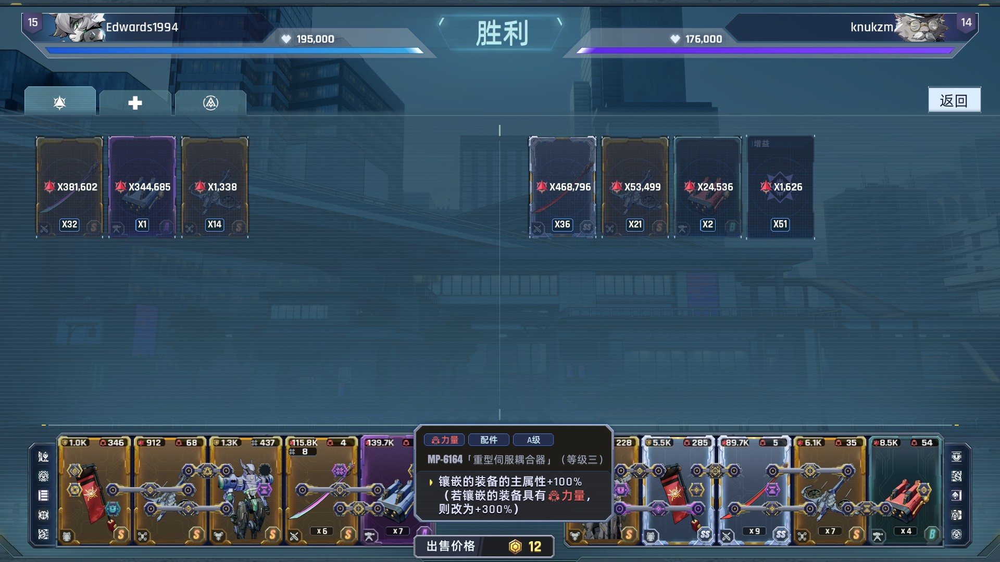

对手卡片段数与说明、战斗不一致
第16天更新：显示不一致已复现；战斗多算攻击未证实。新对照中基础3段＋已读取的单格配件3段＝6段，装备说明和战斗均为6，选敌卡片仍为3。第15天九段的具体配件未回读，仍保留当时的不确定性。
最初记录：候选006，待核实。2026-11-16，Windows Steam Demo 1.0.0.2218，Build 26644085，第二局第15天爬塔，对手knukzm。
已经观察到的事实
- 选敌右侧名字为knukzm；左侧仍是更早对手名，属于已记录的BUG-001。预览SS刀卡面×3，召唤组件未显示×7。
- 选择该对手进入战斗，倒计时36秒截图中同一刀为×9，召唤组件为×7。
- 胜利后的统计装备栏仍为刀×9、召唤×7；该刀输出468,796。
这些数字是装备栏的段数标记，不是统计卡底部×36等尚未明确口径的次数。
目前不能排除的解释
首局已实测「生命偷取」长配件令进攻装备攻击段数+6，能让3段变9段。本例刀与无人机均多6段，画面也有连接两者的长配件，是合法加成的候选解释。但本场没有保存该敌方配件的悬停词条，仅凭图标不能确认型号或效果。
如果配件合法提供+6，战中9段合理；需要继续确认选敌预览是否遗漏了加成或采用了另一种明确说明的口径。如果不存在合法来源，才进一步检查重复叠加或战斗计算异常。AI此次战前未逐项读配件，确实可能低估对方，不把这个误判直接归咎于游戏。
下一次对照
找带同类长配件的对手，开战前保存配件原文、两端连接、刀和召唤段数；核对基础段数＋所有静态加成，再保存开场尽早一帧与结束帧。分别验证「预览未更新」与「战中动态增加」两种假设。当前仅有一场前后差异的直接证据，没有重复复现率，也未提出修复方案。

第16天对照复现
- 先读NailingX连接肩炮与手武的S长件MP-6081「生命偷取」，明确写着攻击段数+6，预览肩炮9段、手武10段。本例说明九段可以合法出现，预览也并非总漏算。
- 免费刷新到C4C，打开左侧详情。SS AGM-N01「坚锋」卡片底部×3。
- 悬停该刀，说明为「造成6次420伤害，获得6次14力量」，同画面卡片仍×3。
- 悬停该刀的单格MP-6079「生命偷取」，词条攻击段数+3。
- 进入战斗，同一刀底部×6。基础3＋配件3与说明、战斗一致。
预期：选敌卡片与说明使用一致的有效段数；若卡片仅显示基础段数，应明确标注。实际：部分对手卡片保留3，说明与战斗6。会使战前爆发、命中成长和控制威胁被低估。当前是一次带配件原文的完整复现，加上第15天的一次前后差异，尚不能声称每次刷新必现。
临时规避：逐个读取装备说明和段数配件，不单独依赖卡片×N。边界：没有源代码或完整事件日志，未定位缓存或刷新根因；没有证据证明战斗计算错误。左侧名称保留NailingX属于独立BUG-001。